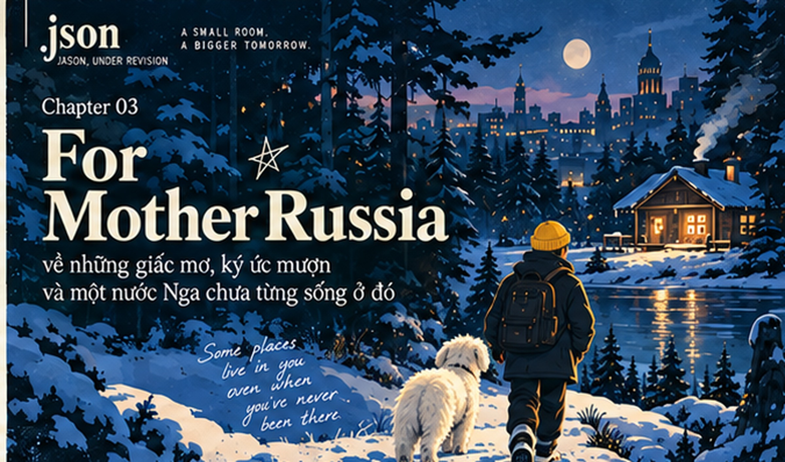

Some places live in you even if you have never been there. Blue winter, a yellow beanie, all black and Gấu, amid images borrowed from childhood imagination.

Editorial: original and a minimal revision. Visual: winter poster, cabin, salad, family, game imagery. Book: A5 editorial proof. Digital: seven-node Memory Graph and full reader. Video: ambient-only 24s proof. Distribution: social drafts; approvals and live deployment still pending.